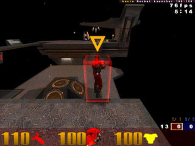
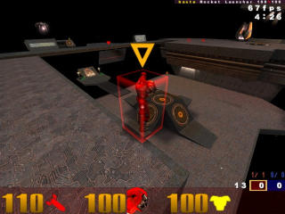
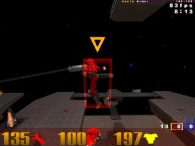
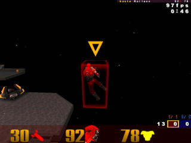
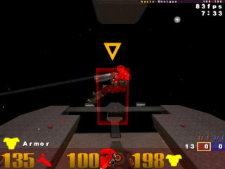
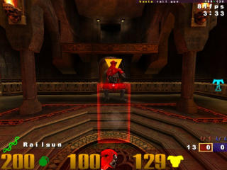
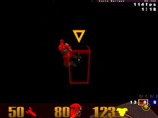
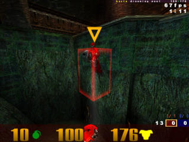

This section is mostly intended to answer questions for mod developers. So please, if you are a mod developer, feel free to point to this document rather than explaining everything yourself. I'll try to address everything I've ever been asked about server-side lag compensation here.
cl_timenudge is another very misunderstood option, so you'll see a lot of that as well.
The other parts of Unlagged don't really need explaining. Heck, nobody ever asks about skip correction, though they all benefit. They'll hardly notice it's there, though it's been weeks since they had to aim at a guy who was nearly impossible to rail...not that I'm bitter or anything...
(I'm really not, actually. I understand that it's difficult to notice the absence of something.)
Here are the questions answered:
Common Answer
Everybody knows that when you play online, it takes a bit for your attacks (or any movement, really) to reach the server. The most annoying part about that is that, with a class of weapons called “hitscan” (in Quake 3, the machinegun, shotgun, lightning gun, and railgun), you have to aim ahead of your targets.
Unlagged compensates for that by:
If you have a consistent enough connection, the server knows exactly where you saw your target when you pressed the button. That's not too far out: it sent you the information on where to draw them in the first place.
The end result is that you can put your crosshair on your target, fire, and hit.
Technical Answer
Unlagged uses a technique called “backward reconciliation” for hitscan weapons' hit tests. For the duration of a hit test, it moves players to where you saw them when you fired. (It knows because it sent you the player origins in the first place, it saves that information up in a history queue, and your fire command contains a timestamp.) After the hit test, it moves them back.
Moving player entities around like that is perfectly fine, as long as the entities' states are restored exactly, and as long as no code runs which requires players in their correct state while the server is in a backward-reconciled state. Unlagged is very careful about such things, so it doesn't present any problems.
Common Answer
You can pretty much ping as high as you like, but there's a built-in limit of about 800. Unrelated, nasty-to-your-gameplay things start happening around 450-500, though, so 800 is nearly infinite in that regard.
Projectiles aren't compensated for, however, so it's still best practice to find a server where your ping is relatively low.
Technical Answer
Unlagged stores up to 17 player states. On a server where sv_fps is set to 20 (most servers, since that's the default), this means it stores 850ms of data. With Quake 3's built-in lag accounted for, that means you can ping up to 800 and have it still work.
As mentioned in the Common Answer, nasty things start happening when you ping above 450ms. Player prediction, in particular, gets bad: if you get 125 FPS, predicting your own player's state becomes impossible to do correctly, since the client engine will only store 64 previous commands.
Common Answer
If the client game has only one set of information about a player – his current position, heading, and speed – it can't represent very well what's going on on the server. It needs two sets, so it can draw the player between them.
If it needs two sets, it has to wait before releasing the information to be drawn. That means what you see is a perpetually a little behind what's actually going on, in addition to those same effects being caused by your ping. That's what the “built-in lag” refers to.
Since most servers run at 20 FPS, they send information every 50ms. Because of this, the built-in lag is usually said to be 50ms.
Technical Answer
In order to accurately represent what's happening on the server, the client game needs to interpolate player states. It can't interpolate without two states to interpolate between, so the client engine always holds a server snapshot until the next one arrives. Then it will release the earlier one to the client game.
Most servers run at 20 FPS, so the amount of time the snapshot is held is usually 50ms.
Common Answer
This is directly related to the previous question, so please digest that part first. If you don't get that part, you might as well skip this answer.
cl_timenudge tells your client to either 1) wait less, or 2) wait more, before releasing information to be drawn. Remember how the client game needs two sets of information to draw a player accurately? A negative cl_timenudge setting will cause your client to release information earlier, at the expense of accuracy. A positive cl_timenudge setting will cause it to wait more, effectively simulating Internet lag.
As it is, setting cl_timenudge negative in vanilla Quake 3 and most mods will make other players look “jerky.” Unlagged fixes that tendency, which makes negative cl_timenudge values a much more viable way of reducing the effects of Internet lag. As far as I know, only one non-Unlagged mod, CPMA, does the same thing. (The fix may also make it into OSP in the future sometime because of that.)
Settings below -30 and above 30 are absolutely meaningless. Yes, that means even a negative cl_timenudge setting can't rid you completely of the built-in lag.
If you are playing a mod with 50ms lag correction (like OSP, CPMA, or an Unlagged mod with full lag compensation switched off), using a large negative cl_timenudge can screw up your weapon visuals a bit. However, if you want extra lag compensation, you might just choose to do it anyway at the expense of those things.
Also, if you have cl_timenudge set to a large negative value in any mod, be aware that where you see other players will not be as correct as if you had it set to 0. That's what you pay in order to lead your instant-hit attacks less – though what you pay is much less in Unlagged.
Technical Answer
For the most part, the Common Answer will suffice. I have a few things to clarify, though.
When cl_timenudge has a negative value, every non-player entity is simply extrapolated earlier. This is just fine, because these entities only require one set of information for extrapolation anyway, and those entities were going to be processed late because of the “built-in lag.” That means, with a negative cl_timenudge everything you see except players is perfectly accurate – it's just a little earlier than it would be otherwise.
Now, by default, when the player entities are run through the trajectory function (and they will be because the client game will assume they need to be extrapolated), the output origin is the same as the input origin. They'll only move when a new snapshot arrives. That's what makes players look like they're moving at 20 FPS while everything else is smooth.
The change Unlagged and CPMA make is to turn those player entities into extrapolating entities if they don't interpolate, so that the trajectory function will extrapolate them properly. In this way, with a negative cl_timenudge value, they'll be extrapolated just like every other entity.
The trade-off is occasional extrapolation error, but that's much, much better than having the players move at 20 FPS. Personally, I believe Unlagged's behavior is more correct. It's definitely more useful.
No, definitely not, in any way, shape, or form. It does not suppress commands, nor does it put inconsistent timestamps in them. (Those are the only two ways in which it could.)
If you perceive it to be so, you are perceiving the effects of something else – probably the “jerky” player's problematic outgoing connection.
Common Answer
Sort of. What actually happened was that, when your attacker saw you, you really were in plain sight, to him.
You didn't think you would get total hitscan lag compensation for free, did you?
At any rate, if all you're worried about is getting “shot around a corner,” the effects aren't that big of a deal. You can get used to that. Just remember that Unlagged helps other people hit you in exactly the same way that it helps you hit other people.
Technical Answer
The answer isn't much different. You, as the target, were backward reconciled to the point where your attacker saw you, which was in plain sight. There's nothing buggy or weird about it – it's just a side-effect. Lag compensation by client-side hit tests has exactly the same problem.
That depends on whether or not you're the kind of player that actually does something about impending hitscan attacks. (Most casual players really don't.) If you don't, you have nothing further to worry about.
Imagine yourself timing someone else's rail attacks. You jump to the side just before one comes by. The thing is, the hit test against you is done where your attacker saw you, which was before you jumped. You get hit anyway.
There are numerous scenarios like this, and all of them have the same solution: whatever you were going to do, do it earlier. How much earlier mostly depends on your attacker's ping. It actually doesn't take that long to get used to.
Personally, I believe there's hardly a problem when all the players in a game are pinging within 100ms of each other. That describes most casual and almost all competitive games.
The remaining casual games can handle a larger ping spread easily. It's the competitive games in which the ping spread is greater than 100ms that you start having fairness issues.
|
Yes, and – as much as I love to say it, but it's true – it's probably not Unlagged's fault. What you're seeing happens in Quake 3 anyway. It's just more noticeable when your rail trail appears immediately. Okay, there is one new thing in Unlagged that could cause the perception of this happening. It's that the hit sounds and knockback are delayed, but the rail trail isn't. By the time the hit sound comes, the target might have moved away. That can make it look like a false hit. Anyway, there are four common reasons for false hits and false misses. Here they are: Axial or misrepresentative bounding boxes

Picture 1: Bounding Box

Picture 2: Rotated 45 Degrees

Picture 3: Flying Forward

Picture 4: Flying Sideways

Picture 5: Flying Backward

Picture 6: Jumping

Picture 7: Just Hit Bouncepad

Picture 8: Swimming
The pictures on the right are taken in third-person with cg_drawBBox set to 1. This is a cheat-protected option in Unlagged that draws player bounding boxes. A bounding box is basically the hit zone. Every player's bounding box, regardless of which model they use, is exactly the same size. What varies between player models is how representative the player model is of the bounding box. I took the pictures with Bitterman, the model I use. Picture 1 shows Bitterman standing in one place. The bounding box representation of him is alright – it's just got empty spaces up both of his sides because he's sort of thin. Hitting one of those empty sides would definitely look like a false hit. Picture 2 shows Bitterman in exactly the same spot, but rotated 45 degrees. Notice that his bounding box did not rotate with him. That's not a bug in the cg_drawBBox code – that's actually the way Quake 3 does bounding boxes. It's the “axial” part: they are always in the same orientation in relation to the map. (“Axial,” incidentally, means “along an axis” – like all 12 edges of the bounding box.) At ground level, it's about 1.4 times easier to hit a player if you're at a 45-degree angle to him in relation to the map. If you're up about 22 degrees, it's about 1.6 times easier. Yeah, so Quake 3 without lag compensation is the ultimate in consistency, right? No – but that's what I hear from a lot of Unlagged naysayers. (Please excuse my bitter attitude toward people who refuse to understand things.) Picture 3 shows Bitterman flying forward. This is also what it looks like when a player is strafe-jumping. Right: he's forward in the bounding box, leaving the back half empty. This is where a lot of “you can shoot behind people and still hit them” accusations come from. Picture 4 is Bitterman flying sideways. Notice the empty space in the corners. Picture 5 is Bitterman flying backward. Notice the big, fat empty space at the bottom. My very favorite, though, has got to be Picture 6. It's Bitterman doing a standing jump. Granted, most player models don't have this problem with a standing jump (though all have it at least a little bit), but it illustrates how bad things can get. Bitterman's player model, when jumping, as this picture shows, can generate both a false hit and a false miss. The next two, however, happen to the same degree with every player model. Picture 7 shows Bitterman just after he hit one of the bouncepads by the railgun in q3dm17. Notice that he's almost completely outside of his bounding box. Right: you can hit all that empty space and still hit Bitterman, or you can think you hit Bitterman and actually miss him. After about a half a second of flying through the air, the player model is put back where he belongs. Picture 8 is Bitterman swimming. Swimming players aren't exactly upright, so they have to fit into their bounding boxes somehow, so this is forgivable. Except that bounding boxes could be altered for players who are swimming in the water... Maybe I'll add that to Unlagged sometime. Anyway, there it is: your player models aren't always the exact representation of “reality” that you always thought they were. You can take this one of two ways, I suppose: you can whine and moan about it, or you can use it to your advantage. You choose. Personally, if I were a professional player, I would learn the orientations of the player bounding boxes in all the maps I played. (It's pretty intuitive: they usually line up exactly with the major walls in the map. It's not a coincidence, it's a constraint placed upon map makers by their tools.) Then I would favor hitscan weapons when I was at a 45-degree angle to my target horizontally, and even moreso when I was 22 degrees up. I would also find a player model to use that was very misrepresentative of my bounding box (to use against the n00bs), and find an enemy model (since most pro games happen with OSP or CPMA, where you can set your enemy's model) that was very representative. I would memorize the best places to aim at for any animation of that enemy model. For instance, it's always best to shoot at the middle of Bitterman's back when he's strafe-jumping. Rail trail duration This may be obvious, but it should be said: it takes a little while for your brain to register that a new thing is in your field of vision. That counts for rail trails. Also, since the rail trail tends to hang out a bit (400ms, give or take a few), it's easy for it to look like the initial slug missed. Since your brain tends to judge hits and misses with the rail trail (it sort of draws attention to itself) unless you're concentrating on the crosshair, it could mess you up. I suggest turning the rail trail duration down by setting cg_railTrailTime to 100. That's what I do, anyway. It was amazing how much more consistent my rail shots became after I did that. Prediction error When you move, it takes about half your ping for the server to get an update that you did. Basically, you see yourself ahead of where you really are on the server. This is the “prediction” part: your own game predicting where you'll be. It's why sometimes you get hit with rockets that you think you dodged and you dodge rockets that look like they should hit you. It of course gets worse the higher your ping is. Now, your game can't always know where you'll be. It can't know for certain whether or not you'll be hit by a rocket, for instance. If you get hit by one, your game will learn that from the server, and will have to handle “prediction error.” It does this by easing you into your correct position over the course of 1/10 second. That's one reason rocket jumping with a high ping looks so weird. It takes a bit of time (about half your ping) for your game to find out that you got hit, though. During this time, your predicted position is completely off. What happens if you fire a railgun during that time? Right: where you think you fired from isn't where the server thinks you fired from, and you might miss. Or you might think you missed, but hit anyway. Unfortunately, there's nothing much we can do about this one. We just have to deal with it, and assume the server is always correct when it judges a hit test. Another common event besides getting hit by a rocket that will cause prediction error is brushing up against another player. That's why sometimes hit tests in close-up battles look so off. They're not, really – it's just that your game thought you would be in a different place than you actually ended up. Missed snapshots, late snapshots, and missed commands A “snapshot” is a chunk of data that you get from the server, sent at the end of every server frame. If the server's sv_fps is set to 20, you get 20 of these in a second. This is how your game knows what's going on around you. A snapshot contains information about other players, projectiles, items, you name it – anything not part of the map itself. If you miss a snapshot, where you see other players will not be correct. Exactly what kind of “not correct” isn't necessarily important. It's that the server, not able to know which snapshots you got and which you didn't, will assume you got them all, and do all of your hit tests accordingly. What the server thinks you saw and what you really saw will not be the same thing. If you have red lines in the lower section of your lag-o-meter, you've got this problem. Receiving snapshots late can cause problems as well. Your client has to keep drawing stuff while it hasn't received an update from the server, and it figures out where to put things by guessing (extrapolating, actually). Sometimes the guesses aren't quite right, and again, what the server thinks you saw and what you really saw will not be the same thing. If you have yellow bits at the top of your lag-o-meter and you aren't using a negative cl_timenudge, there's a good chance you've got this problem. Outgoing packet loss can also cause problems. If a command from you that tells the server to fire your gun doesn't get to the server, it'll get taken care of in the next command. If that one doesn't get there, it'll be taken care of in the one after that, and so on. If this kind of thing happens, the server will get a different idea about the time you pressed the fire button than when you actually did. If your lag-o-meter's green line looks really jagged, you may have this problem. Fortunately, all of these problems are hardly ever bad enough that they'll totally screw your hit tests over. If they're bad enough to do that, they usually cause other problems that keep you from having a decent game anyway. For the most part, they'll just make things look weird every once in a while. Combinations You're going to get combinations of all these effects. Sometimes the combination will end up subtractive (they'll sort of cancel each other out), and sometimes they'll end up additive. In any case, I must repeat this: everything I've described happens with or without Unlagged. They're just easier to see when full lag compensation is enabled. |
Though many have theorized that this is the case (and even asserted it as fact and used it in speaking out against lag compensation), Unlagged does not give high pingers any extra advantage over low pingers.
It's obviously going to be more of a help to them. If one friend of mine has a buck and another has five, I'm definitely going to have to give more money to the friend with only one dollar if I want them each to have ten.
“Ah hah! But do they each really have ten now?” somebody says. Then he names some scenario, and I show him how it works out perfectly fair. (It's actually never perfectly fair, because even if it appears so, the low-pinger's commands to fire will always reach the server first. He will always win if the situation comes down to a race to fire.) Here are two common ones.
The high pinger can shoot around corners. Alright, tossing aside the notion that his target was in plain sight when he fired, sure, it looks like that. Reverse the situation, though: if the high pinger is the target and the low pinger is the attacker, the low pinger sees the “shooting around corners” effect to exactly the same degree as the low pinger did in the original situation.
(And to the people who say they don't pay their exorbitant broadband fees to play like an HPB, I say cry me a river, go jump in a lake, whatever. If they don't see any value in lack of prediction error, actually being able to use projectile weapons in close-up battles, seeing things more exactly as they happen, always winning a race to fire condition, and not having to deal with having half their commands or snapshots either dropped or suppressed, I don't want to talk. gg sportsmanship.)
Every assertion of this type becomes quite benign as soon as you reverse the situation. Also, don't forget that, even after you reverse it, the low pinger still wins the race to fire and thus has at least a slight advantage in every case.
The high pinger can make tons of shots that should miss. One low-pinger I know tried an interesting experiment: he started some large downloads and played an Unlagged mod. He reported hitting things he shouldn't have – what I call false hits.
Well of course he did. He also caused most of his received snapshots to arrive inconsistently or never arrive at all. The top of his lag-o-meter had an awful lot of yellow, which means the things his game was rendering didn't match up with what the server thought it rendered. It probably ended up dropping his outgoing packets as well, or making them late enough that the server dropped them. These kinds of conditions are simply not good for consistency. (There's a more complete explanation of the effects of bad network conditions at the end of the previous question.)
Even if your friendly neighborhood high pinger has connection problems that bad, they're not going to help his rail percentage. They'll more likely hurt it. Which would you rather have: good network conditions, where players you aim at are guaranteed to be where you saw them for hit tests; or bad network conditions, where the players you aim at have a good chance of actually being elsewhere?
One thing to keep in mind, though, is that the high pingers who have stuck it out with Quake 3 probably have better aim than most, on average. If you give some of them a lag-compensated hitscan weapon, they can be downright scary.
It changes the weapon balance, certainly. Since, under normal networking conditions, your hitscan weapons never become less effective, they tend to get used more.
What's difficult to determine is exactly when the game gets too overbalanced in favor of hitscan weapons. At what ping a player switches from running through tight corridors holding a rocket launcher to holding a shotgun really depends on the player.
Even though I don't have any concrete data (I don't think anyone has), I can offer some observations, based on quite a few months of watching players adapt to hitscan lag compensation.
It seems like it takes about a month for things to get back to normal. Players will favor hitscan weapons for a while, being simply enchanted by the fact that they can use them so well. The lightning gun, in particular, gets a lot of time. After a month or so, the players swing back toward their normal weapon selection, realizing that it's more effective – that it's still better to bounce a player with a rocket and rail him in the air than to try to rail him twice.
You end up with players who hardly change their game at all, players who will change their game a little more, players who will rely on nothing but hitscan weapons, and everything in between. Fortunately, the vast majority will be the second group. What a player ends up doing depends on his style and ping.
So as far as I've seen, it doesn't totally change the weapon balance around. It more restores it to LAN play than screws it up.
Obviously, if you're playing a total conversion mod in which almost all the weapons are hitscan, things will be different.
When you play the game with lag compensation on, your hitscan attacks are predicted. Even though they haven't really happened yet (your commands need to get to the server before they'll happen), your game shows you what probably will happen. Things look generally consistent.
When you spectate another player who's playing with lag compensation on, you see pretty much exactly what's happening on the server.
The server does hit tests based on where the attacker saw his potential targets, rather than where they are. That means, for a positive hit test, the rail shaft will be drawn through where the hit target used to be. You'll see the rail shaft at that position, and the target at his new position. There will be a discrepancy, and the rail trial may look like it actually missed.
That's it. There's no cheating going on, no weirdness – just a visual inconsistency that it's impossible to get rid of without creating inconsistency of other types.
Common Answer
I mentioned already that the position you see yourself in is “predicted.” It takes a little while (about half your ping) for your position on the server to match your predicted position. This can make it difficult to dodge projectiles sometimes.
If you set cg_projectileNudge to your ping, it'll be easier. In return, you deal with projectiles looking like they stick into walls before blowing up, and projectiles looking like they start far away from the other player's muzzle. (That last one is fine, though, since it's reflecting your window of useful action.) It's all visual.
Anyway, set this to your ping if you can deal with those visual problems. Personally, I love it for online rocket battles.
Technical Answer
Again, same as above, but with clarifications. The reason for the visual problems is that cg_projectileNudge causes rockets to be extrapolated to a time further in the future. It won't let them go through map geometry, though, so it stops them at the point where they'll strike.
Common Answer
A player's position on the server is only ever changed when the server gets an update from the player. (The player's client sends an update after every client frame.) Skipping happens when a server frame goes by without an update from the player. When that happens, in the next snapshot you get from the server, the player will be in exactly the same position he was in the previous snapshot.
Enough of that will make a player skip around.
Unlagged's skip correction will move a player even if there was no update. Sometimes it's wrong, but not often enough (or it's not wrong enough) that it'll be worse than the actual skipping. Usually it's much, much better.
Technical Answer
Clarification: Unlagged – with full lag compensation both on and off – does hit tests against what you see. The player's true state isn't actually changed when there's no update, but the state the other clients see is changed. The skip correction can work without messing up the skipping player.
You'll see a phone jack above a player's head if enough server frames go by without an update from him that the server can't correct for the skipping. Usually this indicates that the player has a problematic ougoing connection, or a bad path to the server.
When the server has g_truePing set to 1 (the default), it uses a different method to calculate players' pings. The old method is more or less a hardware ping: how long it takes packets to make a round trip. This doesn't take into account built-in latencies or cl_timenudge at all.
Your ping will probably show a little higher (like 8ms or so), but this way it's more useful. It gives you a better picture of the kind of lag you're dealing with.
It's a somewhat common practice to raise the server framerate to 30 or 40 to make the gameplay “smoother.” What “smoother” means in this case is that Quake 3's built-in 50ms lag becomes 33ms or 25ms, and everyone sees things a bit more like how they happen on the server.
Those are really the only two reasons to do it. Now, when Unlagged is running, full compensation or not, the built-in lag is taken care of completely. There goes one reason. It also does every hit test based on what players see rather than what's actually happening, so the second reason isn't any longer valid either.
It does have some detrimental effects:
So no, I wouldn't advise higher server framerates. There aren't any advantages anymore, and there are plenty of disadvantages.